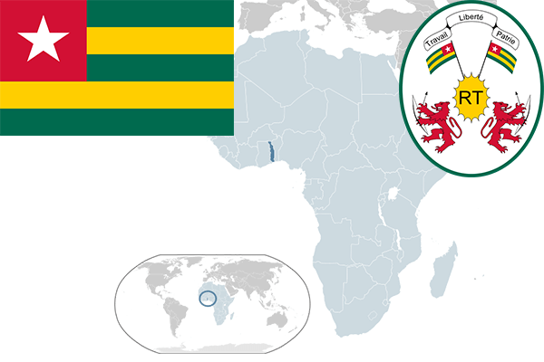

To`liq nomi: Togo Respublikasi
Region: Gʻarbiy Afrika
Qonunchilik shakli: Respublika
Mustaqillik kuni: 27 aprel 1960-yil
Poytaxt: Lome
Maydoni: 56,785 km²
Chegaradosh davlatlari: Gana, Benin, Burkina-Faso
Aholisi: 7 154 237 (2013-yil)
Aholi zichligi: 108 /км²
Aholining o`rtacha yoshi: 60,18 yil
Rasmiy tili: Fransuz tili
Dini: -
Pul birligi: G’arbiy Afrika Franki
Telefon prefiksi: +228
Internet domen: .tg
Xalqaro tashkilotlarga a`zoligi: BMT (1960-yil)
Dengiz va okeanlarga chiqishi: Gvineya qo’ltig’i
YIM: Butun: $4.7 mlrd
Yirik shaharlari: Lome, Sokode,Kara, Kpalime